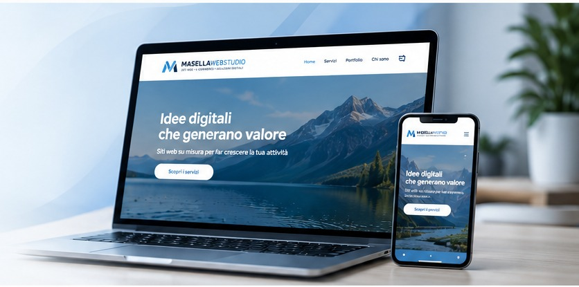
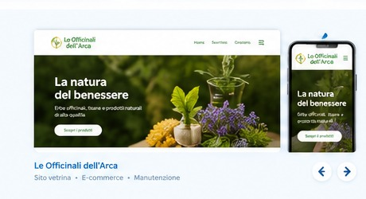

Siti vetrina
Presenta la tua attività con un sito curato, moderno e professionale.
Scopri di più →LA TUA PRESENZA ONLINE · IL MIO LAVORO
Creo siti web su misura, ottimizzati per tutti i dispositivi, veloci, sicuri e facili da gestire. Ti aiuto a portare la tua attività online e a farti trovare dai tuoi clienti.

PER CHI CREO
Ogni progetto parte dalle esigenze reali del cliente: presentare un'attività, ricevere contatti, vendere online o lanciare un nuovo servizio. Design e sviluppo lavorano insieme per costruire un'esperienza chiara e professionale.
Scopri tutti i servizi →Presenta la tua attività con un sito curato, moderno e professionale.
Scopri di più →Vendi i tuoi prodotti online con un'esperienza semplice e intuitiva.
Scopri di più →Pagine focalizzate su campagne, servizi, eventi e acquisizione clienti.
Scopri di più →Aggiornamenti, piccole modifiche e assistenza dopo la pubblicazione.
Scopri di più →
E-COMMERCE · RESPONSIVE
Un e-commerce botanico progettato da zero con catalogo prodotti, categorie, carrello, checkout demo e una forte attenzione all'esperienza mobile.
Parliamo della tua attività, dei tuoi clienti e di quello che vuoi ottenere.
Definiamo struttura, stile, contenuti e funzionalità prima di sviluppare.
Costruisco il sito e lo ottimizzo per desktop, tablet e smartphone.
Testiamo tutto, pubblichiamo e posso continuare a seguirti con la manutenzione.
HAI UN'IDEA?